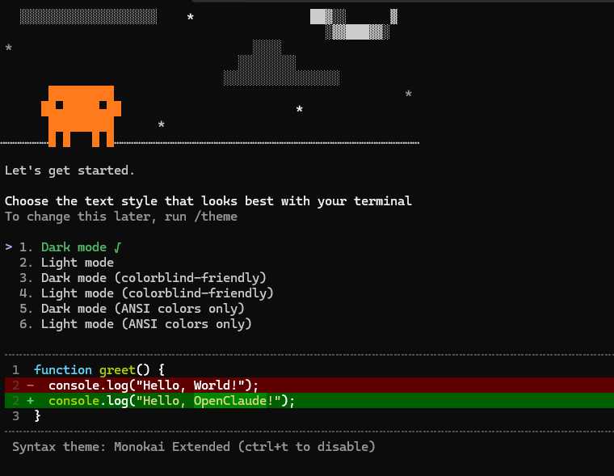
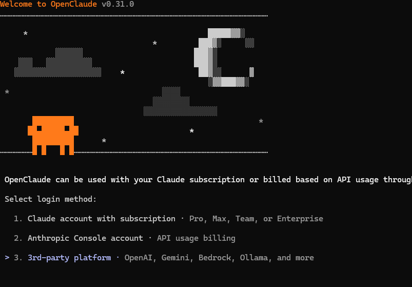
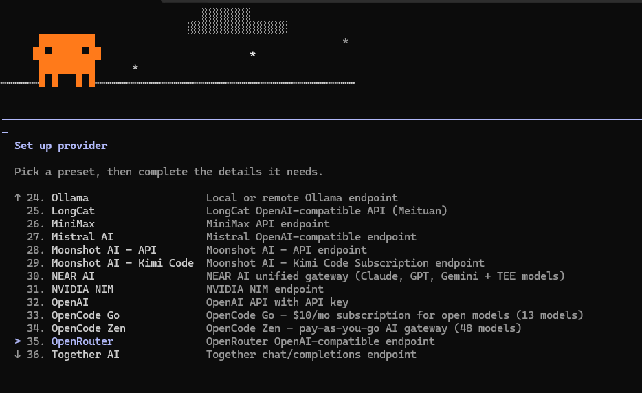
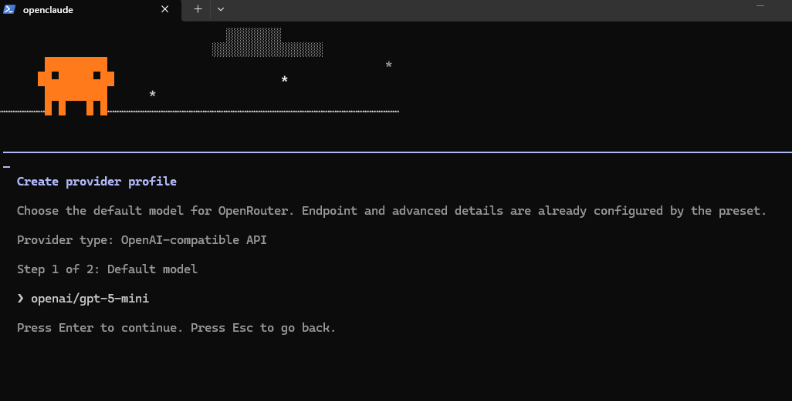
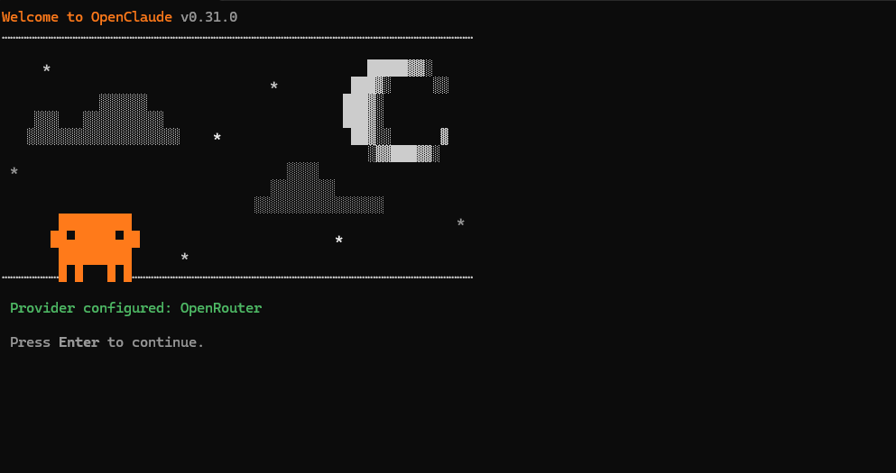
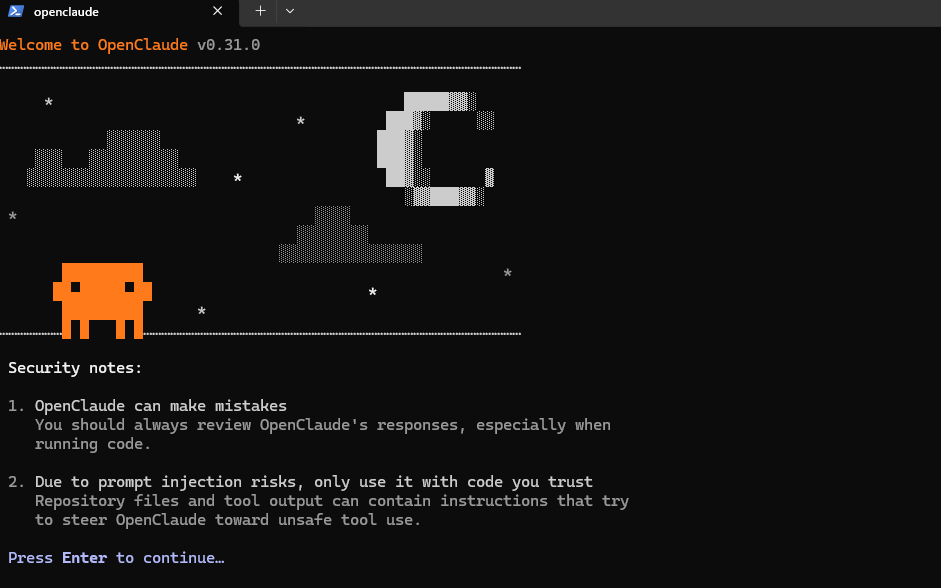
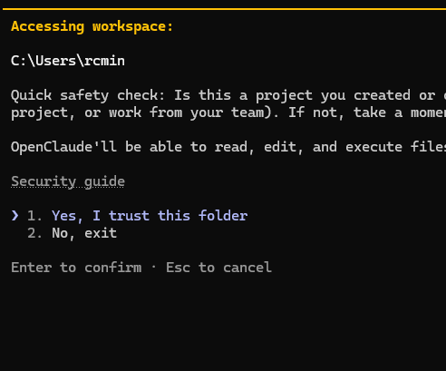

Tudo o que você precisa para instalar, configurar variáveis, utilizar com modelos gratuitos (OpenRouter, Ollama local, DeepSeek) e dominar o agente de código no seu terminal.
O OpenClaude (mantido pela organização Gitlawb) é um fork de código aberto do Claude Code que liberta você do ecossistema fechado de uma única provedora. Ele transforma seu terminal em uma central de desenvolvimento autônomo com agentes inteligentes.
Conecte-se a mais de 200 modelos via OpenRouter, use Ollama local 100% offline e grátis, DeepSeek, Groq ou Gemini.
Ele não apenas responde perguntas: ele cria arquivos, edita código cirurgicamente, roda testes, executa comandos bash/PowerShell e faz buscas com ripgrep.
Integração nativa com Model Context Protocol, permitindo que a IA consulte bancos de dados, APIs do GitHub, documentações externas e ferramentas personalizadas.
Roteiro real de uma instalação no Windows: reinstalar o OpenClaude, conferir o ambiente e passar pelo assistente de configuração usando o OpenRouter com modelos gratuitos.
Este tutorial segue o vídeo "Claude Code GRÁTIS?? Como Instalar o OpenClaude no Windows + VSCode!", do canal GXDEV. O vídeo começa no trecho da instalação (2:59).
Não carregou? Assista direto no YouTube.
Se o OpenClaude já estava instalado e você quer começar limpo, remova só o pacote dele. A configuração antiga fica na pasta .openclaude e no arquivo .openclaude.json do seu usuário.
npm uninstall -g @gitlawb/openclaude
# Opcional: apaga a configuração antiga (inclusive chaves salvas)
Remove-Item -Recurse -Force "$env:USERPROFILE\.openclaude", "$env:USERPROFILE\.openclaude.json"
@anthropic-ai/claude-code (ou do instalador nativo em %USERPROFILE%\.local\bin\claude.exe) e guarda a configuração em .claude\. Nada disso precisa ser removido para reinstalar o OpenClaude.
Rode cada comando. Se aparecer um número de versão, está instalado; se aparecer "não é reconhecido como comando", não está. O npm vem junto com o Node.
node -v npm -v git --version
Não tem o Node? Escolha um dos caminhos:
winget install OpenJS.NodeJS.LTScmd → botão direito em Prompt de Comando → Executar como administrador. Se o Node já estiver instalado, pule o Chocolatey: ele só serve para instalar o Node.
[Environment]::SetEnvironmentVariable(...) só funcionam no PowerShell. No CMD eles dão "A sintaxe do nome do arquivo... está incorreta".
npm install -g @gitlawb/openclaude@latest openclaude --version
added 8 packages na instalação e algo como 0.31.0 (OpenClaude) na versão.
O OpenClaude trabalha na pasta em que foi aberto: ele pode ler, editar e executar arquivos ali. Por isso, entre na pasta do projeto antes de abri-lo.
# Crie uma pasta de testes (ou use a do seu projeto)
mkdir $env:USERPROFILE\Projetos\teste-openclaude
cd $env:USERPROFILE\Projetos\teste-openclaude
openclaude
Na primeira execução, o OpenClaude abre um assistente. São sete telas:

/theme.


openai/gpt-5-mini, que é pago. Apague com Backspace (se for só texto cinza de exemplo, basta começar a digitar), escreva openrouter/free e aperte Enter. No passo 2, cole a sua API key do OpenRouter.sk-or-v1-). Cole só no terminal do OpenClaude: nunca em chats, prints, repositórios ou arquivos que vão para o GitHub.



C:\Users\rcmin): aqui o certo é 2. No, exit, entrar na pasta do projeto com cd e abrir de novo. Só escolha 1. Yes quando o caminho for a pasta do projeto.Quando aparecer o campo de digitação (>), pergunte algo simples, como "olá, qual modelo você é?". Se ele responder, está tudo funcionando.
| Erro | Causa | O que fazer |
|---|---|---|
401 | API key errada ou revogada | Gere outra em openrouter.ai/keys e configure de novo |
404 / model not found | Nome do modelo errado ou modelo retirado do ar | Rode /model e escolha outro da tabela abaixo |
429 | Limite diário dos modelos gratuitos | Espere renovar ou volte para openrouter/free |
Modelos gratuitos do OpenRouter usados na Aula 03 (consulta de 19/09/2026; a lista muda com frequência):
| Nome para digitar | Contexto |
|---|---|
openrouter/free | Automático: o OpenRouter escolhe um gratuito no ar (recomendado) |
qwen/qwen3.8-27b:free | 262 mil tokens |
nex-agi/nex-n2.5-pro:free | 262 mil tokens |
nex-agi/nex-n2.5-mini:free | 262 mil tokens |
inclusionai/ling-3.0-flash-vl:free | 262 mil tokens |
dots-studio/dots-3-note-preview:free | 512 mil tokens |
Lista atualizada, direto do terminal:
(Invoke-RestMethod https://openrouter.ai/api/v1/models).data |
Where-Object { $_.id -like '*:free' } |
Select-Object id, @{n='contexto';e={$_.context_length}} |
Format-Table -AutoSize
Certifique-se de ter as ferramentas de sistema recomendadas instaladas antes de iniciar o OpenClaude.
O OpenClaude requer Node.js 22 LTS ou superior para funcionar com total suporte às APIs mais recentes. Abra o PowerShell e consulte o seu ambiente:
node -v npm -v
Caso o comando não seja reconhecido ou a versão seja inferior à v22.x, instale diretamente pelo winget oficial da Microsoft:
winget install OpenJS.NodeJS.LTS
O OpenClaude utiliza o Git para rastrear alterações e gerar commits, e o Ripgrep (rg) para localizar trechos de código em milissegundos dentro do seu projeto:
# Instalação do Git for Windows winget install Git.Git # Instalação do Ripgrep para buscas rápidas winget install BurntSushi.ripgrep.MSVC
Também certifique-se de que a política de execução de scripts do PowerShell permita carregar binários locais:
Set-ExecutionPolicy -Scope CurrentUser -ExecutionPolicy RemoteSigned -Force
Instale o pacote oficial via npm para torná-lo acessível em qualquer pasta do seu computador.
Com o Node 22+ ativo, execute a instalação global:
npm install -g @gitlawb/openclaude@latest
Para confirmar que a instalação ocorreu com êxito, consulte a versão:
openclaude --version
$npmPrefix = npm config get prefix
$currentUserPath = [Environment]::GetEnvironmentVariable("Path", "User")
if (($currentUserPath -split ';') -notcontains $npmPrefix) {
[Environment]::SetEnvironmentVariable("Path", "$currentUserPath;$npmPrefix", "User")
Write-Host "PATH atualizado com sucesso! Feche e reabra o PowerShell." -ForegroundColor Green
} else {
Write-Host "O prefixo do npm já está no seu PATH!" -ForegroundColor Cyan
}
Escolha como prefere rodar o OpenClaude: com modelos gratuitos na nuvem, offline na sua máquina ou com os melhores modelos do mundo.
O OpenRouter é a opção mais flexível, pois dá acesso a centenas de modelos através de uma única API, incluindo modelos com etiqueta :free.
sk-or-v1-...).# Ativar o backend OpenAI compatível $env:CLAUDE_CODE_USE_OPENAI="1" $env:OPENAI_BASE_URL="https://openrouter.ai/api/v1" $env:OPENAI_API_KEY="sk-or-v1-coloque-sua-chave-aqui" # Para usar o roteador gratuito do OpenRouter: $env:OPENAI_MODEL="openrouter/free" # Iniciar o OpenClaude openclaude
openrouter/free, você pode definir modelos específicos como deepseek/deepseek-r1:free ou meta-llama/llama-3.3-70b-instruct:free. Para modelos pagos de ponta, utilize anthropic/claude-3.5-sonnet ou openai/gpt-4o.
Você pode rodar o OpenClaude totalmente sem internet, usando modelos rodando na sua própria placa de vídeo ou processador com o Ollama.
winget install Ollama.Ollama ou baixe em ollama.com.ollama run qwen2.5-coder:14b
Depois, configure o OpenClaude para apontar para o servidor local do Ollama:
$env:CLAUDE_CODE_USE_OPENAI="1" $env:OPENAI_BASE_URL="http://localhost:11434/v1" $env:OPENAI_API_KEY="ollama" $env:OPENAI_MODEL="qwen2.5-coder:14b" openclaude
O DeepSeek oferece um dos melhores raciocínios para código com o custo por token mais baixo do mercado.
$env:CLAUDE_CODE_USE_OPENAI="1" $env:OPENAI_BASE_URL="https://api.deepseek.com/v1" $env:OPENAI_API_KEY="sk-sua-chave-deepseek-aqui" $env:OPENAI_MODEL="deepseek-chat" openclaude
$env:OPENAI_MODEL="deepseek-reasoner".
O Groq é famoso pela latência ultrabaixa e geração de centenas de tokens por segundo em hardware LPU dedicado.
$env:CLAUDE_CODE_USE_OPENAI="1" $env:OPENAI_BASE_URL="https://api.groq.com/openai/v1" $env:OPENAI_API_KEY="gsk_sua-chave-groq-aqui" $env:OPENAI_MODEL="llama-3.3-70b-versatile" openclaude
Você sabia que não precisa configurar variáveis de ambiente manualmente? O OpenClaude possui um assistente interativo embutido!
openclaude/provider~/.openclaude/.> /provider
# Siga o menu interativo com as setas do teclado para configurar e trocar de perfil!
Evite ter que digitar as chaves e URLs toda vez que fechar e abrir o PowerShell.
O arquivo de perfil do PowerShell é carregado automaticamente sempre que uma nova aba ou janela é aberta. Vamos editá-lo:
# Criar o arquivo de perfil caso ainda não exista if (!(Test-Path $PROFILE)) { New-Item -Type File -Path $PROFILE -Force } # Abrir no Bloco de Notas para edição notepad $PROFILE
Cole as seguintes linhas no final do arquivo que abrir no Bloco de Notas e salve (Ctrl + S):
# Configuração Padrão do OpenClaude $env:CLAUDE_CODE_USE_OPENAI = "1" $env:OPENAI_BASE_URL = "https://openrouter.ai/api/v1" $env:OPENAI_API_KEY = "sk-or-v1-sua-chave-aqui" $env:OPENAI_MODEL = "openrouter/free" # Atalho opcional: basta digitar 'oc' para abrir o openclaude function oc { openclaude $args }
Se você alterna frequentemente entre Ollama, DeepSeek e OpenRouter, crie um script iniciar-openclaude.ps1 na sua pasta de projetos:
$env:CLAUDE_CODE_USE_OPENAI="1" $env:OPENAI_BASE_URL="https://openrouter.ai/api/v1" $env:OPENAI_API_KEY="sk-or-v1-sua-chave-aqui" $env:OPENAI_MODEL="openrouter/free" Write-Host "Iniciando OpenClaude com OpenRouter..." -ForegroundColor Green openclaude
Utilize os comandos internos para controlar sessões, economizar tokens e gerenciar recursos.
Quando o OpenClaude estiver ativo no seu terminal, você pode digitar comandos iniciados por barra (/) para executar ações imediatas:
| Comando | Finalidade | Exemplo de Uso |
|---|---|---|
/provider |
Abre o assistente gráfico para alternar provedores e salvar perfis. | /provider |
/model |
Altera o modelo de LLM ativo sem sair da sessão. | /model deepseek-chat |
/init |
Analisa o projeto atual e cria diretrizes e regras no arquivo CLAUDE.md. |
/init |
/compact |
Comprime o histórico da conversa para liberar a janela de contexto e poupar tokens. | /compact |
/cost |
Exibe a quantidade de tokens consumidos e o custo estimado da sessão atual. | /cost |
/doctor |
Faz um diagnóstico completo das ferramentas de sistema (Node, Git, Ripgrep, etc). | /doctor |
/clear |
Limpa o histórico de memória e inicia uma conversa do zero. | /clear |
/mcp |
Gerencia servidores MCP (Model Context Protocol) conectados ao agente. | /mcp |
/review |
Apresenta um diff detalhado de todas as alterações feitas no código antes de commitar. | /review |
/help |
Mostra a lista completa de comandos, atalhos de teclado e parâmetros. | /help |
-p:
openclaude -p "Crie um endpoint Express em server.js com rota /health e teste"
Respostas rápidas para os erros mais comuns enfrentados durante a instalação e execução.
Causa: A pasta global do npm não está registrada na variável de ambiente PATH do Windows.
Solução: Execute no PowerShell:
$npm = npm config get prefix; [Environment]::SetEnvironmentVariable("Path", "$([Environment]::GetEnvironmentVariable('Path','User'));$npm", "User")
Depois feche todas as janelas do terminal e abra novamente.
Causa: Política de segurança padrão do PowerShell bloqueando a execução de scripts .ps1.
Solução: Execute o comando para liberar scripts locais assinados para o seu usuário:
Set-ExecutionPolicy -Scope CurrentUser -ExecutionPolicy RemoteSigned -Force
Causa: Chave de API expirada, com espaço extra ou digitada incorretamente.
Solução: Verifique se a variável está com o valor correto digitando $env:OPENAI_API_KEY no PowerShell. Certifique-se de que a chave começa com sk-or-v1-.
Causa: O OpenClaude requer Node v22+ devido ao uso de APIs nativas recentes.
Solução: Atualize imediatamente usando o winget:
winget install OpenJS.NodeJS.LTS
Causa: O OpenClaude necessita do executável rg no PATH para varredura de código.
Solução: Instale o Ripgrep pelo winget:
winget install BurntSushi.ripgrep.MSVC
Tanto o projeto OpenClaude quanto este guia são iniciativas 100% de código aberto. Participe, deixe sua estrela e envie sugestões de melhorias!
Código-fonte do binário OpenClaude CLI, extensões para VS Code, relatórios de bugs e roadmap de desenvolvimento.
Repositório oficial deste site guia interativo. Sinta-se livre para abrir issues com dicas de novos modelos ou enviar Pull Requests.
Consulte as notas de versão oficiais, histórico de atualizações e métricas de download no registro público do npm.